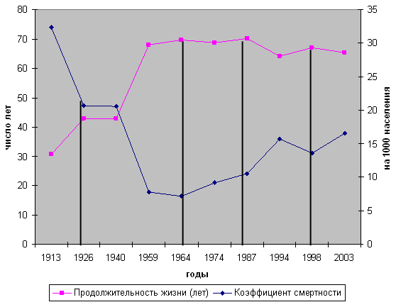
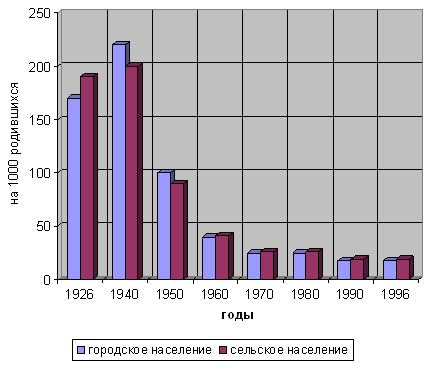

Б.Т. Величковский. Социальный стресс, трудовая мотивация и здоровье
4. Роль эффективной трудовой мотивации
Специфическая причина возникновения социального стресса заключается в утрате населением эффективной трудовой мотивации. Для преодоления в России социального стресса и медико-демографического кризиса необходимо создание у трудоспособного населения сильной трудовой мотивации, основанной на возможности честным трудом обеспечить достойное существование себе и своей семье.
Проблема трудовой мотивации существует во всех странах мира. Высокопроизводительный труд требует большого волевого усилия работника. Такое волевое усилие дается тяжело, длительно оно может осуществляться только при очень сильной трудовой мотивации. Подобная мотивация особенно важна вначале, потом на помощь приходит сложившийся динамический стереотип. Частная собственность обеспечивает личную экономическую независимость и свободу выбора, поэтому представляет собой высокий трудовой стимул. Именно в этом заключалось подавляющее преимущество западных производителей перед СССР. В экономике Советского Союза игнорировался «закон стоимости». Это обусловило экстенсивный, затратный путь развития народного хозяйства и обесценило заработную плату как действенный стимул к труду.
Однако, возникает вопрос, так ли необходима и значима эффективная трудовая мотивация не только для успешного развития экономики, но и для снижения смертности и повышения продолжительности жизни населения?
Если проанализировать изменения показателей смертности населения и средней ожидаемой продолжительности жизни в России за весь ХХ век, то можно выделить только четыре периода, когда значение этих параметров возрастало [16] (рис. 3).

Рис. 3. Продолжительность жизни и смертность населения России
Первый такой период - годы НЭПа (1921-1927). Он характеризовался возрождением рыночных отношений, как в частом секторе, так и внутри государственного сектора экономики и развитием у населения высокой трудовой мотивации. При этом природа трудовых стимулов была двоякой. Одних вдохновляли высокие доходы и заработки, других в не меньшей степени окрыляла перспектива строительства социализма. Об этом неопровержимо свидетельствует документальная в своей основе повесть Николая Островского «Как закалялась сталь». Смертность населения, составлявшая в 1913 году 32,4 на тысячу, снизилась в 1926 году до 20,7.
После ликвидации НЭПа, не сумев обеспечить более привлекательную, чем на Западе, трудовую мотивацию, И.В. Сталин встал на путь создания систем принудительного труда: ГУЛАГа и колхозов. В итоге в предвоенном 1940 году уровень смертности населения оставался на уровне 1926 года, хотя в это время в экономически развитых странах происходил беспрецедентный рост средней продолжительности жизни.
В Советском Союзе такой период также наступил, но значительно позднее, в послевоенные годы. Смертность снизилась с 20,6 в 1940 году до 7,17 в 1964 году, ожидаемая продолжительность жизни увеличилась с 42,9 до 69,6 года. В это время Советский Союз вошел в число трёх десятков государств с наиболее низкой смертностью. К повышению средней продолжительности жизни как в экономически развитых странах, так и в СССР, привело снижение смертности от эпидемических инфекционных заболеваний, прежде всего, детских инфекций, которое было достигнуто в результате специфической вакцинации, улучшения гигиенических стандартов, использования новых химиопрепаратов и антибиотиков (рис. 4).
Но, кроме медицинских причин, имели значение и другие факторы. В развитых странах таким фактором стало формирование более эффективной трудовой мотивации, основанной на повышении привлекательности, как самого труда, так и его оплаты. Г. Форд первым установил, что его рабочие должны получать столько, чтобы могли покупать машины, которые они производят. Имел значение и переход от преимущественно физического труда к механизированному и автоматизированному производству, поскольку изнуряющий физический труд вызывает ускоренное биологическое старение организма и раннюю смертность.

Рис. 4. Коэффициент младенческой смертности
В Советском Союзе произошли не менее глубокие перемены в общественном сознании. Прежде всего, в период так называемой «оттепели» 1953-1964 годов население освободилось от постоянного подспудного страха сталинских репрессий. Начатое масштабное жилищное строительство, повышение заработной платы низкооплачиваемым категориям рабочих и служащих вызвали массовый трудовой подъём населения, у которого вновь возродилась надежду на достойную жизнь, добытую ценой невероятных усилий и потерь в годы Великой Отечественной войны.
Однако, преодолеть сталинское наследие удалось лишь отчасти. Следующие два с лишним десятилетия стали периодом прогрессирующего застоя в экономике. Заработная плата снова перестала быть действенным стимулом к труду. Страна проиграла «холодную войну», потому что мы не смогли достигнуть более высокой производительности и качества труда, чем на Западе. И одна из причин такого положения заключалась в отсутствии у населения Советского Союза в тот период эффективной трудовой мотивации. Снижение трудовых стимулов снова сопровождалось ухудшением здоровья населения, повышением смертности и уменьшением продолжительности жизни.
Положение изменилось только в 1986-1989 годах, когда были достигнуты самые высокие за всё послевоенное время показатели продолжительности жизни населения, они возросли до 70,1 года. Этот период соответствовал начатой М.С. Горбачевым перестройки жизни страны. Два года пришлись на антиалкогольную эпопею. Но благоприятные демографические сдвиги сохранились и в 1988-1989 годах, когда потребление спиртных напитков практически вернулось к исходному уровню. В эти годы были созданы кооперативы, которые дали населению первую легальную возможность повысить жизненный уровень своим собственным трудом. Реформы М.С. Горбачева не привели к успеху. Но демографические показатели убедительнее всего свидетельствуют, насколько потребность перемен отвечала чаяниям народа.
«Шоковая стратегия» реформ вызвала развитие социального стресса и резко ухудшила все медико-демографические показатели населения России. Вместе с тем, после первых 3 лет реформ параметры общественного здоровья начали улучшаться, к 1998 году смертность снизилась с 15,0 до 13,6 на тысячу, на 3 года увеличилась ожидаемая продолжительность жизни [12]. Эти изменения подтвердили справедливость народного изречения: «время лечит». В самом деле, каких-либо положительных изменений ни в социальной сфере, ни в здравоохранении не произошло. Но население уже в большей мере адаптировалось к новому для него фактору - рыночным экономическим условиям. Уменьшилась интенсивность психологического напряжения, что и оказало положительное влияние на здоровье. Не менее существенное значение имело то, что именно в эти годы миллионы наших соотечественников были заняты малой предпринимательской деятельностью - «челночным бизнесом», который многим позволил не только выжить, но и ценою собственных активных усилий и тяжких трудов заработать экономическую независимость.
Положение резко ухудшил финансовый кризис августа 1998 года. Дефолт прервал начавшуюся долговременную адаптацию населения к новым экономическим условиям. Работодатели преодолели финансовый кризис за счёт глубокого обнищания населения [19]. Девальвация рубля и инфляция привели к сокращению реальных доходов. Резко снизившаяся оплата труда перестала выполнять свою базовую функцию: стимулировать повышение качества и производительности труда. Изменение таможенной политики государства в пользу крупного капитала резко сократило челночный бизнес. Бедное и малообеспеченное население лишилось полноценного доступа к социальным услугам, определяющим воспроизводство «человеческого капитала» - здравоохранению, образованию, культуре, оказалось вынужденным экономить на продуктах питания и качественных лекарствах. Социальный стресс в это время достиг максимального уровня. Поэтому закономерно, что именно после «дефолта» убыль населения в России стала составлять практически миллион человек ежегодно. Интенсивность второй волны социального стресса оказалась столь велика, что по прошествии четырёх лет всё ещё не наблюдается никаких проявлений долговременной адаптации у трудоспособного населения страны. Вследствие наложения эффектов «шоковой» стратегии и дефолта социальная цена реформ в России оказалась непомерно высокой.
Таким образом, все периоды улучшения общественного здоровья совпадают с повышением трудовой мотивации, с появлением возможности или даже надежды на лучшую жизнь. Следовательно, эффективная трудовая мотивация, как и надежда, продлевают жизнь.